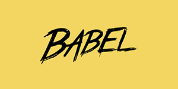

Reading Notes
My reading notes
by MShineRay
@ 2021-10-09 16:00:00

Webpack
是前端资源模块化管理和打包工具
Webpack 是当下最热门的前端资源模块化管理和打包工具。它可以将许多松散的模块按照依赖和规则打包成符合生产环境部署的前端资源。

TypeScript
中文手册
TypeScript 是由微软开源的编程语言。它是 JavaScript 的一个超集，而且本质上向这个语言添加了可选的静态类型和基于类的面向对象编程。

Svelte
中文网
Svelte 是构建 Web 应用程序的一种新方法。Svelte 是一个编译器，它将声明性组件转换成高效的 JavaScript 代码，并像做外科手术一样细粒度地更新 DOM。

Next.js
中文文档
Next.js 是一个轻量级的 React 服务端渲染应用框架。

Babel
Babel
是一个
JavaScript 编译器。
Babel 是一个 JavaScript 编译器。Babel 通过语法转换器支持最新版本的 JavaScript 语法。
React
用于构建用户界面的
JavaScript 框架
React 起源于 Facebook 的内部项目，是一个用于构建用户界面的 JavaScript 库。

NPM
中文文档
NPM（node package manager）是 Node.js 世界的包管理器。NPM 可以让 JavaScript 开发者在共享代码、复用代码以及更新共享的代码上更加方便。

Yarn
中文手册
Yarn 是一个快速、可靠、安全的依赖管理工具。是 NPM 的替代品。